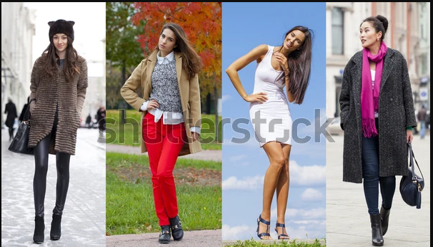

Outfitter for All Seasons!
Type A Month
Clothing can reveal a character’s views on the world. If someone puts on a graphic t-shirt with the sleeves cut off, it implies that they could hardly care less about offending other people. Meanwhile, a character who wears a dressy button-down shirt with a single-breasted plaid jacket seems like the old-fashioned type
When it comes to getting the job done right, sometimes the necessary tools aren't what you pick up at the hardware store; it's the clothes on your back. Feel comfortable and know you can rely on our wide range of men's work clothes and men's uniforms. Shirts and t-shirts that allow you to breathe. Shorts and pants that are rugged and durable. Sweatshirts, jackets, and coats for layering over a long winter. Coveralls when you really need to cover-it-all. Hats and caps to keep the sun out of your eyes and the cold winter bite at bay. Even thermal underwear and socks!
Text provided by JC